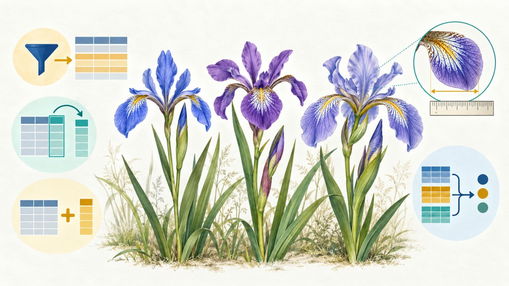
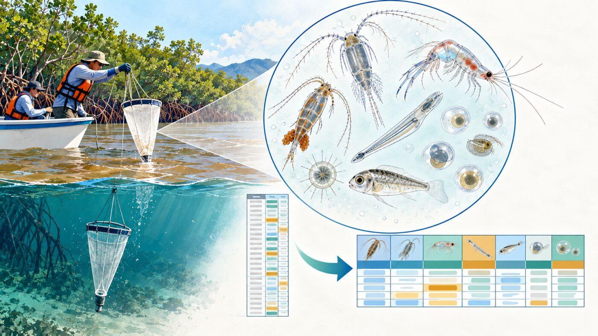
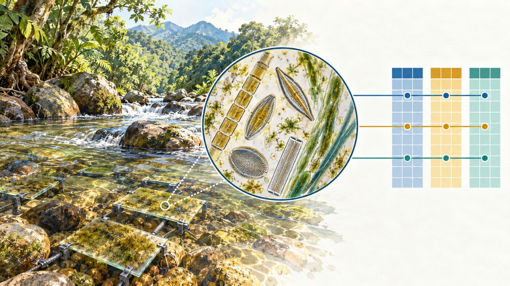
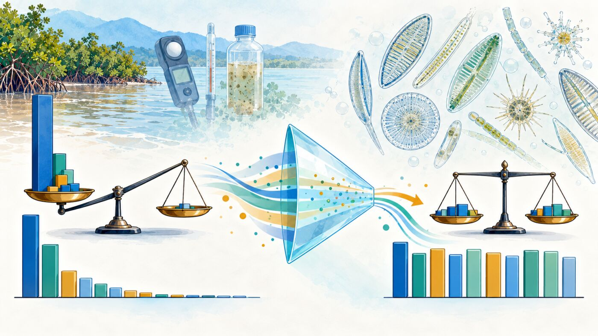
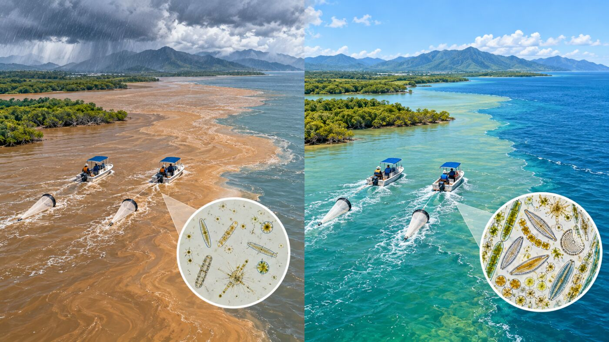
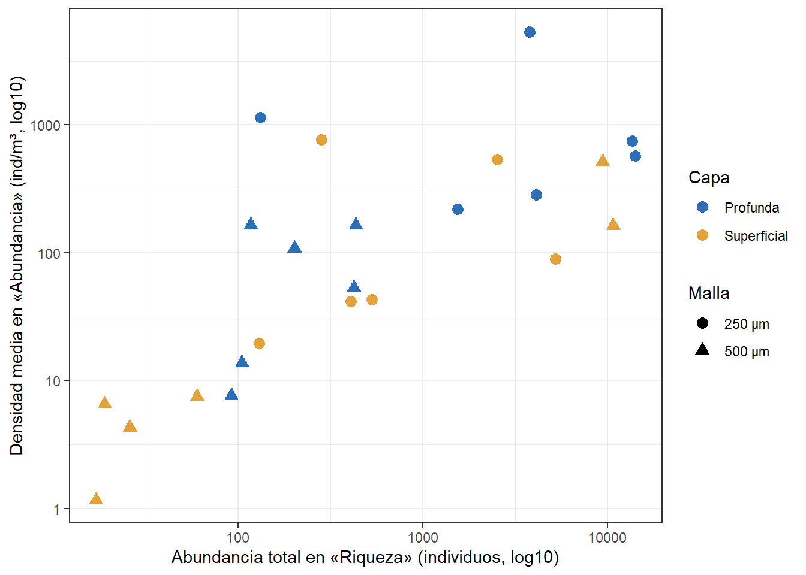

Taller 5. Manipulación de bases de Datos Multivariadas
Materiales requeridos para el taller en clase
En el siguiente enlace se puede descargar el archivo comprimido del taller, con las bases de datos de mesozooplancton estuarino y de microalgas perifíticas (📰 Taller 5. Bases de datos multivariadas).
Nota: una vez se descarguen los materiales, se requiere descomprimirlos antes de realizar cualquier procedimiento y seguir las orientaciones del docente para realizar los ejercicios requeridos.
Diapositivas en vivo - Slides.com

- Diapositivas del Taller 5. Bases de datos multivariadas — Pendiente de incluir.
Objetivos del taller
Este taller acompaña la sesión del viernes de la Semana 3 (S7), después de la presentación 06 (“Introducción al Análisis Multivariado”), y prepara las bases que se exploran y ordenan en los Talleres 6 a 10 (RA2, con decisiones de diseño RA1). Al terminar, se podrá:
- Leer en R bases de Excel y de texto delimitado, y detectar los errores típicos que trae una hoja de cálculo (separadores, decimales, espacios sobrantes, nombres mal escritos, números que son categorías).
- Usar los verbos de
tidyverse(select(),filter(),mutate(),rename(),group_by()ysummarise()) para responder preguntas con resúmenes por grupo. - Identificar la unidad muestral de una base y pasar de formato largo a ancho (y de vuelta) sin perder ni duplicar información, uniendo tablas con
left_join(). - Separar una base multivariada en sus tres matrices (F, X y Y), categorizar variables continuas a nivel de unidad muestral y aplicar las transformaciones que exigen las técnicas de los talleres siguientes.
El taller es autocontenido: puede seguirse en clase o como trabajo autónomo, y es la base del Cuestionario Quarto CQ1 (Evidencia 3).
TipRuta de la sesión y trabajo autónomo
En clase (≈2 h 30 min, después de la presentación 06) se trabajan las Partes 1 a 4, la lista de verificación y el cierre. La Parte 5 (transformaciones) y el estudio de caso se completan de forma autónoma antes de entregar el CQ1 (martes 27 de octubre). El repaso de R básico está en el Anexo.
| Bloque | Tiempo |
|---|---|
| Parte 1 — De Excel a R | 25 min |
Parte 2 — Verbos de tidyverse con lirios |
30 min |
| Parte 3 — Formatos largo y ancho con plancton | 45 min |
| Parte 4 — Matrices F, X y Y con microalgas | 30 min |
| Lista de verificación y cierre | 15 min |
| Parte 5 y estudio de caso (autónomo) | ≈50 min |
NotaBases de datos
- Lirios (
iris, incluida en R): medidas de sépalos y pétalos de tres especies de Iris (Fisher, 1936). Se usa para aprender los verbos con una base pequeña y limpia. - Plancton (hojas
RiquezayAbundanciadeplancton.xlsx): mesozooplancton del estuario del golfo de Urabá, Caribe colombiano (Vargas-Ospina et al., 2025). - Microalgas (
Microalgas.xlsxyMicroalgas.csv): microalgas perifíticas en tres tributarios del río Gaira, Sierra Nevada de Santa Marta (Osorio Ávila et al., 2015). Los tributarios se identifican como T1 a T3.
Código
# Librerías requeridas
library(tidyverse)
library(readxl)
library(writexl)
library(kableExtra)
library(vegan)
# Paletas del módulo (las mismas del Taller 6)
col_capa <- c(Profunda = "#2C6FB7", Superficial = "#E3A33B")
col_malla <- c("250 μm" = "#2C6FB7", "500 μm" = "#E3A33B")
col_trib <- c(T1 = "#2C6FB7", T2 = "#E3A33B", T3 = "#3E9C8F")Antes de empezar: qué es una base multivariada ordenada
Una base está ordenada (tidy) cuando cada variable es una columna, cada observación es una fila y cada valor ocupa una celda. En ecología, la pregunta clave es qué se entiende por «observación»: la unidad muestral (un arrastre, un sustrato, una quebrada, un transecto), que es la que se replica en el diseño (RA1). Las técnicas multivariadas de los Talleres 7 a 10 esperan una fila por unidad muestral y tres matrices alineadas:
| Matriz | Contenido | Ejemplo | Decisión previa | Conduce a |
|---|---|---|---|---|
| F (factores) | Variables categóricas que definen grupos | Tributario, visita, estación, capa | Definir niveles y etiquetas | LDA, MANOVA, PERMANOVA (T10) |
| X (ambiental) | Variables cuantitativas en escalas distintas | Nutrientes, oxígeno, temperatura | Estandarizar | PCA (T7); explicativa en RDA y CCA (T9) |
| Y (especies) | Abundancias o presencias, con muchos ceros | Géneros de microalgas, grupos de plancton | Transformar (log, Hellinger) | NMDS, CA (T8); respuesta en RDA (T9) |
Los datos rara vez llegan así. Una hoja de campo suele estar en formato largo (una fila por taxón en cada muestra), con errores de digitación y con varias filas por unidad muestral. Este taller recorre el camino de esa hoja a las tres matrices.
Parte 1 — De Excel a R: lectura y errores típicos
Pregunta: ¿Llegan a R los datos tal como se ven en la hoja de cálculo?
Hojas de un libro de Excel
Un libro de Excel puede tener varias hojas; se leen por nombre, no por posición, para que el código no cambie si alguien reordena las pestañas.
Código
# Hojas del libro de plancton
excel_sheets("plancton.xlsx")[1] "Abundancia" "Ab2" "Riqueza" "coord" Código
# Leer la hoja «Riqueza» por su nombre
biol <- read_xlsx("plancton.xlsx", sheet = "Riqueza")
# Estructura: nombre, tipo y primeros valores de cada columna
glimpse(biol)Rows: 498
Columns: 8
$ Station <dbl> 2, 2, 2, 2, 2, 2, 2, 2, 2, 2, 2, 4, 4, 4, 4, 4, 4, 4, 4, 4…
$ Size <chr> "250 μm", "250 μm", "250 μm", "250 μm", "250 μm", "250 μm"…
$ Layers <chr> "Surface", "Surface", "Surface", "Surface", "Surface", "Su…
$ Groups <chr> "Quetognatos", "Sergestidae", "Luciferidae", "Calanoida", …
$ Abundance <dbl> 0, 0, 0, 32, 4, 2, 8, 28, 0, 0, 0, 0, 0, 0, 38, 1, 1, 0, 0…
$ Temperature <dbl> 30.29749, 29.40959, 29.59008, 30.29749, 29.40959, 29.59008…
$ Salinity <dbl> 34.69981, 25.83323, 12.38513, 34.69981, 25.83323, 12.38513…
$ Density <dbl> 21.417828, 15.085254, 5.729643, 21.417828, 15.085254, 5.72…La hoja tiene 498 filas y 8 columnas. glimpse() muestra el tipo de cada columna: <dbl> (número) y <chr> (texto). Revisar los tipos es el primer control de calidad.
Archivos de texto: separador y decimales
Microalgas.csv se exportó desde un Excel en español: las columnas se separan con punto y coma y los decimales llevan coma. La función de lectura debe coincidir con ese formato.
Código
# 1. read_csv() espera comas como separador: todo queda en una sola columna
alg_mal1 <- read_csv("Microalgas.csv", show_col_types = FALSE)
dim(alg_mal1)[1] 24 1Código
# 2. read_delim() con «;» separa bien, pero lee los decimales con coma como texto
alg_mal2 <- read_delim("Microalgas.csv", delim = ";",
show_col_types = FALSE)
class(alg_mal2$Amonio)[1] "character"Código
# 3. read_csv2() usa «;» como separador y «,» como decimal
alg_csv <- read_csv2("Microalgas.csv", show_col_types = FALSE)
class(alg_csv$Amonio)[1] "numeric"Código
# La misma base leída desde Excel
alg_xlsx <- read_excel("Microalgas.xlsx", sheet = "Microalgas")
# ¿Coinciden las dos lecturas?
all.equal(as.data.frame(alg_csv), as.data.frame(alg_xlsx), check.attributes = FALSE)[1] TRUECon read_csv() la base queda en 1 columna; con read_delim(), el amonio llega como texto (character); con read_csv2() se obtienen 24 filas y 33 columnas, idénticas a las de Excel.
Código
# Resumen de cuatro variables ambientales
summary(alg_csv[, c("Amonio", "Oxigeno", "pH", "Temp")]) Amonio Oxigeno pH Temp
Min. :0.0280 Min. :4.960 Min. :6.430 Min. :15.20
1st Qu.:0.1290 1st Qu.:5.902 1st Qu.:7.428 1st Qu.:17.10
Median :0.2000 Median :6.535 Median :8.170 Median :17.60
Mean :0.6835 Mean :6.585 Mean :8.083 Mean :17.36
3rd Qu.:0.4582 3rd Qu.:7.585 3rd Qu.:8.600 3rd Qu.:17.95
Max. :5.9050 Max. :8.160 Max. :9.630 Max. :19.00 summary() es el segundo control: un mínimo o un máximo imposibles (un pH de 75, una temperatura negativa en un río tropical) suelen ser errores de digitación o de decimales.
Espacios sobrantes
readxl y readr eliminan por defecto los espacios al inicio y al final de cada celda, lo que oculta un error del archivo. Con trim_ws = FALSE se ve lo que realmente contiene la hoja:
Código
# Leer sin recortar espacios
biol_crudo <- read_xlsx("plancton.xlsx", sheet = "Riqueza", trim_ws = FALSE)
# Nombres de grupo entre corchetes para ver los espacios
sprintf("[%s]", unique(biol_crudo$Groups))[1:3][1] "[Quetognatos ]" "[Sergestidae]" "[Luciferidae]" Código
# Un filtro por nombre falla con el espacio sobrante
nrow(filter(biol_crudo, Groups == "Quetognatos"))[1] 0Código
# Con str_trim() el filtro funciona
nrow(filter(biol_crudo, str_trim(Groups) == "Quetognatos"))[1] 42Código
# El mismo problema en el encabezado del CSV
alg_crudo <- read_csv2("Microalgas.csv", show_col_types = FALSE, trim_ws = FALSE)
names(alg_crudo)[str_detect(names(alg_crudo), " $")][1] "Planothidium "«Quetognatos » y «Planothidium » tienen un espacio final. Si otra herramienta o un colaborador lee la hoja sin recortar, el filtro devuelve 0 filas y una unión entre tablas no encuentra coincidencias. Por eso el recorte se hace explícito en el código con str_trim(), aunque la función de lectura ya lo haga.
Nombres mal escritos y números que son categorías
Código
# Nombres de género tal como vienen en el archivo de microalgas
names(alg_xlsx)[13:33] [1] "Fragillaria" "Lyngbya" "Chamaepinnularia" "Achnantes"
[5] "Amphora" "Caloneis" "Closterium" "Cocconeis"
[9] "Cymbella" "Eolimna" "Epithemia" "Eunotia"
[13] "Frustulia" "Girosigma" "Gomphonema" "Melosira"
[17] "Navicula" "Nitzchia" "Planothidium" "Surilella"
[21] "Pinnularia" Cinco géneros están mal escritos (Fragillaria, Achnantes, Girosigma, Nitzchia y Surilella); se corrigen con rename() en la Parte 4, una sola vez y en el código, nunca a mano en el Excel original.
Código
# La estación es un número, pero identifica un sitio
class(biol$Station)[1] "numeric"Código
sort(unique(biol$Station))[1] 2 4 7 9 13 15Station toma los valores 2, 4, 7, 9, 13, 15: son códigos de sitio, no cantidades. Si se deja como número, R puede calcular una «estación promedio» o dibujarla como un eje continuo. Se convierte en factor.
Código
# Base depurada: espacios, factores y etiquetas en español
biol <- read_xlsx("plancton.xlsx", sheet = "Riqueza") %>%
mutate(Groups = str_trim(Groups), # Quita espacios sobrantes
Station = factor(Station), # Código de sitio
Size = factor(Size), # Tamaño de malla
Layers = recode_factor(Layers, Depth = "Profunda",
Surface = "Superficial"))
# Grupos taxonómicos registrados
taxones <- unique(biol$Groups)
length(taxones)[1] 12
ImportanteEl Excel original no se edita
Todas las correcciones se hacen en el código: así quedan documentadas, se pueden revisar y se repiten igual cada vez que se renderiza el documento. Es el primer criterio de la rúbrica R2 (reproducibilidad).
Para discutir: en una base propia, ¿qué columna numérica es en realidad un código (parcela, transecto, réplica, año)? ¿Qué pasaría si entrara como número en un modelo?
Parte 2 — Verbos de tidyverse: lirios

Pregunta: ¿Difieren las tres especies de lirio en el tamaño y la forma de sus sépalos?
La base iris viene con R. Se convierte en tibble y se renombran las columnas a minúsculas con guion bajo, un estilo que evita errores al escribirlas.
Código
# Lirios como tibble, con nombres en minúscula y guion bajo
lirios <- as_tibble(iris) %>%
rename_with(~ str_replace(tolower(.x), "\\.", "_"))
# Observaciones por especie
lirios %>%
count(species)# A tibble: 3 × 2
species n
<fct> <int>
1 setosa 50
2 versicolor 50
3 virginica 50Hay 150 observaciones: 3 especies con 50 flores cada una.
Elegir columnas y filas: select() y filter()
Código
# select(): columnas por nombre (o con ayudantes como starts_with())
lirios %>%
select(species, starts_with("sepal")) %>%
head(3)# A tibble: 3 × 3
species sepal_length sepal_width
<fct> <dbl> <dbl>
1 setosa 5.1 3.5
2 setosa 4.9 3
3 setosa 4.7 3.2Código
# filter(): filas que cumplen una condición
setosa_anchas <- lirios %>%
filter(species == "setosa",
sepal_width > 3.5)
nrow(setosa_anchas)[1] 1616 flores de I. setosa tienen sépalos de más de 3.5 cm de ancho. Dentro de filter(), la coma equivale a «y» (&); para «o» se usa |.
Crear y renombrar: mutate(), rename() y recode_factor()
Código
# mutate(): nuevas variables a partir de otras
lirios <- lirios %>%
mutate(sepal_area = sepal_length * sepal_width, # Tamaño
sepal_forma = sepal_length / sepal_width, # Alargamiento
species = recode_factor(species, # Etiquetas para figuras
setosa = "I. setosa",
versicolor = "I. versicolor",
virginica = "I. virginica"))
# rename(): nombre nuevo = nombre viejo
lirios %>%
rename(especie = species) %>%
names()[1] "sepal_length" "sepal_width" "petal_length" "petal_width" "especie"
[6] "sepal_area" "sepal_forma" Resumir por grupo: group_by() y summarise()
Código
# Resumen del área del sépalo por especie
res_lirios <- lirios %>%
group_by(species) %>%
summarise(n = n(),
media = mean(sepal_area),
de = sd(sepal_area),
ee = sd(sepal_area) / sqrt(n()),
mediana = median(sepal_area),
CV = 100 * sd(sepal_area) / mean(sepal_area))
# Tabla del resumen
res_lirios %>%
kbl(booktabs = TRUE, digits = 2,
col.names = c("Especie", "n", "Media", "d.e.", "e.e.", "Mediana", "CV (%)")) %>%
kable_classic(full_width = F) %>%
row_spec(0, bold = TRUE)| Especie | n | Media | d.e. | e.e. | Mediana | CV (%) |
|---|---|---|---|---|---|---|
| I. setosa | 50 | 17.26 | 2.93 | 0.41 | 17.17 | 17.00 |
| I. versicolor | 50 | 16.53 | 2.87 | 0.41 | 16.38 | 17.35 |
| I. virginica | 50 | 19.68 | 3.46 | 0.49 | 20.06 | 17.57 |
I. virginica tiene el mayor área media del sépalo (19.68 cm²), pero I. setosa no es la menor (17.26 frente a 16.53 cm² en I. versicolor): sus sépalos son más cortos y más anchos.
Código
# across(): el mismo resumen para varias columnas a la vez
forma_lirios <- lirios %>%
group_by(species) %>%
summarise(across(c(sepal_length, sepal_width, sepal_forma), mean))
forma_lirios %>%
kbl(booktabs = TRUE, digits = 2) %>%
kable_classic(full_width = F) %>%
row_spec(0, bold = TRUE)| species | sepal_length | sepal_width | sepal_forma |
|---|---|---|---|
| I. setosa | 5.01 | 3.43 | 1.47 |
| I. versicolor | 5.94 | 2.77 | 2.16 |
| I. virginica | 6.59 | 2.97 | 2.23 |
La relación largo/ancho del sépalo es de 1.47 en I. setosa y de 2.16 a 2.23 en las otras dos especies: difieren más en la forma que en el tamaño. Una sola variable no lo muestra; la combinación sí. Es la idea central del análisis multivariado.
Agrupar sin resumir
group_by() seguido de mutate() o filter() calcula por grupo, pero conserva todas las filas:
Código
# Flores con un sépalo más largo que el promedio de su especie
largas <- lirios %>%
group_by(species) %>%
filter(sepal_length > mean(sepal_length)) %>%
ungroup()
largas %>% count(species)# A tibble: 3 × 2
species n
<fct> <int>
1 I. setosa 22
2 I. versicolor 24
3 I. virginica 22
Nota
ungroup()
Una tabla agrupada sigue agrupada en los pasos siguientes. Después de calcular por grupo se usa ungroup() (o .groups = "drop" dentro de summarise()) para evitar resultados inesperados.
Para discutir: el CV del área es parecido entre especies (de 17 a 17.6 %), aunque la d.e. no lo es. ¿Cuándo conviene comparar la variabilidad con el CV y cuándo con la d.e.?
Parte 3 — Formatos largo y ancho: mesozooplancton estuarino

Pregunta: ¿Qué es una fila en la hoja Riqueza y cómo se obtiene una base con una fila por muestra y un taxón por columna?
Paso 1 — Contar antes de agregar
La hoja está en formato largo: cada fila es un grupo taxonómico en una combinación de estación, malla y capa. Antes de agregar, se cuenta cuántas filas hay en cada combinación.
Código
# Registros por estación, malla y capa
reg <- biol %>% count(Station, Size, Layers)
# Rango de registros por combinación y número de combinaciones
range(reg$n)[1] 12 34Código
nrow(reg)[1] 24Código
# ¿Cuántas veces aparece cada grupo en cada combinación? (juegos apilados)
juegos <- biol %>%
count(Station, Size, Layers, Groups) %>%
group_by(Station, Size, Layers) %>%
summarise(juegos = max(n), .groups = "drop")
table(juegos$juegos)
1 2 3
7 16 1 Código
sum(juegos$juegos)[1] 42Código
# ¿Cambia la salinidad dentro de una misma combinación?
amb_var <- biol %>%
group_by(Station, Size, Layers) %>%
summarise(n_sal = n_distinct(Salinity),
.groups = "drop")
range(amb_var$n_sal)[1] 2 6Código
# Ejemplo: estación 2, malla de 500 μm, capa profunda (un solo juego)
biol %>%
filter(Station == "2",
Size == "500 μm",
Layers == "Profunda") %>%
select(Groups, Abundance, Salinity) %>%
head(4)# A tibble: 4 × 3
Groups Abundance Salinity
<chr> <dbl> <dbl>
1 Quetognatos 0 26.7
2 Sergestidae 9 13.3
3 Luciferidae 355 26.7
4 Calanoida 50 13.3Hay 24 combinaciones (6 estaciones × 2 mallas × 2 capas), con entre 12 y 34 registros cada una. Cada grupo aparece de 1 a 3 veces por combinación: hay juegos de registros apilados (42 en total), sin una columna que los identifique. Además, la salinidad toma entre 2 y 6 valores distintos por combinación, y cambia de una fila a otra incluso dentro de un mismo juego.
Código
# Proporción de registros con abundancia cero
c(ceros = sum(biol$Abundance == 0),
registros = nrow(biol)) ceros registros
247 498 247 de los 498 registros (50 %) son cero: en formato largo, cada taxón ausente ocupa una fila.
AdvertenciaDiseño (RA1)
La hoja Riqueza no tiene época, réplica ni identificador de muestra, y las variables ambientales no se mantienen constantes dentro de un juego. La unidad muestral que puede reconstruirse es la combinación estación × malla × capa (24 muestras). Para llegar a ella hay que agregar los juegos apilados, y esa decisión se declara en los métodos: las abundancias se suman y las variables ambientales se promedian. Con una hoja así, conviene consultar a quien tomó los datos antes de analizarla.
Paso 2 — Sumar abundancias, promediar el ambiente
Las abundancias son aditivas: si una muestra se reparte en varias filas, el total es la suma. Las variables ambientales no lo son: dos lecturas de 30 °C no dan 60 °C; se promedian.
Código
# Variables ambientales: promedio por muestra
amb <- biol %>%
group_by(Station, Size, Layers) %>%
summarise(across(c(Temperature,
Salinity,
Density), mean),
.groups = "drop")
dim(amb)[1] 24 6Paso 3 — De largo a ancho: pivot_wider()
Código
# Sin agregar: los valores repetidos quedan como listas (no sirve)
tax_mal <- biol %>%
select(Station,
Size,
Layers, Groups,
Abundance) %>%
pivot_wider(names_from = Groups,
values_from = Abundance)
class(tax_mal$Calanoida)[1] "list"Si cada combinación tiene varios valores para un mismo taxón, pivot_wider() no sabe cuál poner en la celda y guarda una lista (list), con una advertencia. Primero se suma y luego se pasa a ancho:
Código
# Abundancias: suma por grupo y muestra, y paso a formato ancho
tax <- biol %>%
group_by(Station, Size,
Layers, Groups) %>%
summarise(Abundance = sum(Abundance), .groups = "drop") %>%
pivot_wider(names_from = Groups,
values_from = Abundance,
values_fill = 0)
dim(tax)[1] 24 15values_fill = 0 indica que un taxón sin registro en una muestra tiene abundancia cero. Es correcto aquí porque la ausencia de registro significa que no se encontró; en otras bases, una celda vacía puede ser un dato faltante (NA), y no es lo mismo.
Paso 4 — Unir tablas: left_join()
Código
# Base ancha: ambiente + taxones + abundancia total
pl_ancho <- amb %>%
left_join(tax, by = c("Station", "Size", "Layers")) %>%
mutate(Ab = rowSums(across(all_of(taxones))))
# Control: la unión no debe cambiar el número de muestras
c(amb = nrow(amb),
pl_ancho = nrow(pl_ancho)) amb pl_ancho
24 24 Las estaciones se ubican a lo largo del estuario en tres zonas (Vargas-Ospina y Córdoba-Bejarano, 2022). Esa información no está en la hoja: se crea una tabla pequeña y se une por la columna común.
Código
# Tabla de zonas por estación
zonas <- tibble(Station = factor(c(2, 4, 7, 9, 13, 15)),
Zona = factor(rep(c("Fluvial",
"Estuarina",
"Marina"),
each = 2),
levels = c("Fluvial",
"Estuarina",
"Marina")))
# Unión por estación
pl_ancho <- pl_ancho %>% left_join(zonas, by = "Station")
# Salinidad media por zona
sal_zona <- pl_ancho %>%
group_by(Zona) %>%
summarise(n = n(), Salinidad = mean(Salinity))
sal_zona %>%
kbl(booktabs = TRUE, digits = 1) %>%
kable_classic(full_width = F) %>%
row_spec(0, bold = TRUE)| Zona | n | Salinidad |
|---|---|---|
| Fluvial | 8 | 22.2 |
| Estuarina | 8 | 30.2 |
| Marina | 8 | 33.5 |
La salinidad media aumenta de la zona fluvial (22.2) a la estuarina (30.2) y a la marina (33.5), con 8 muestras por zona.
NotaTipos de unión
left_join(a, b) conserva todas las filas de a y agrega las columnas de b donde la clave coincide. Si la clave tiene un tipo distinto en cada tabla (número en una, factor en otra) o un espacio sobrante, la unión falla o deja NA. Por eso, después de unir, se revisa el número de filas y la presencia de NA: sum(is.na(pl_ancho$Zona)) = 0.
Código
# Primeras muestras de la base ancha
pl_ancho %>%
select(Station, Zona,
Size, Layers,
Salinity, Calanoida,
Luciferidae, Ab) %>%
head(4) %>%
kbl(booktabs = TRUE, digits = 2) %>%
kable_classic(full_width = F) %>%
row_spec(0, bold = TRUE)| Station | Zona | Size | Layers | Salinity | Calanoida | Luciferidae | Ab |
|---|---|---|---|---|---|---|---|
| 2 | Fluvial | 250 μm | Profunda | 25.26 | 12672 | 400 | 14030 |
| 2 | Fluvial | 250 μm | Superficial | 23.27 | 568 | 984 | 5210 |
| 2 | Fluvial | 500 μm | Profunda | 19.97 | 50 | 355 | 434 |
| 2 | Fluvial | 500 μm | Superficial | 28.66 | 10 | 10672 | 10697 |
Paso 5 — De ancho a largo: pivot_longer()
Para graficar varios taxones en paneles (Taller 6) se vuelve a formato largo, ahora con una fila por taxón en cada muestra:
Código
# De ancho a largo, una fila por muestra y taxón
pl_largo <- pl_ancho %>%
select(Station, Zona, Size,
Layers, all_of(taxones)) %>%
pivot_longer(all_of(taxones),
names_to = "Groups",
values_to = "Abundance")
c(original = nrow(biol), reconstruida = nrow(pl_largo)) original reconstruida
498 288 La base larga reconstruida tiene 288 filas (24 muestras × 12 grupos), frente a las 498 de la hoja original: ya no hay juegos apilados.
Paso 6 — Abreviaturas y transposición
Los nombres largos se abrevian para tablas y figuras de ordenación, conservando una tabla de equivalencias:
Código
# Tabla de equivalencias nombre–abreviatura
abrev <- tibble(Groups = taxones,
Abrev = abbreviate(taxones,
minlength = 4))
# Base ancha con columnas abreviadas (una copia; pl_ancho no cambia)
pl_abrev <- pl_ancho %>%
rename_with(~ abrev$Abrev[match(.x, abrev$Groups)],
all_of(taxones))
names(pl_abrev) [1] "Station" "Size" "Layers" "Temperature" "Salinity"
[6] "Density" "Clnd" "Cycl" "Hrpc" "Hvdp"
[11] "LrvN" "LrvZ" "LrdC" "Lrdp" "Lcfr"
[16] "Otrs" "Qtgn" "Srgs" "Ab" "Zona" Algunas técnicas o tablas piden los taxones en filas y los sitios en columnas (la transpuesta):
Código
# Taxones en filas y estaciones en columnas (abundancia total por estación)
tax_est <- biol %>%
group_by(Station, Groups) %>%
summarise(Abundance = sum(Abundance), .groups = "drop") %>%
pivot_wider(names_from = Station, values_from = Abundance)
tax_est %>%
kbl(booktabs = TRUE) %>%
kable_classic(full_width = F) %>%
row_spec(0, bold = TRUE)| Groups | 2 | 4 | 7 | 9 | 13 | 15 |
|---|---|---|---|---|---|---|
| Calanoida | 13300 | 11006 | 288 | 1615 | 3911 | 3362 |
| Cyclopoida | 428 | 947 | 29 | 125 | 237 | 307 |
| Harpacticoida | 50 | 33 | 1 | 45 | 18 | 4 |
| Huevos de peces | 168 | 135 | 6 | 20 | 92 | 2 |
| Larva Nauplio | 57 | 282 | 12 | 0 | 12 | 0 |
| Larva Zoea | 44 | 406 | 59 | 10 | 13 | 4 |
| Larvas de Crustaceo | 16 | 0 | 125 | 38 | 110 | 112 |
| Larvas de peces | 2562 | 98 | 25 | 27 | 12 | 0 |
| Luciferidae | 12411 | 11659 | 20 | 6 | 9 | 5 |
| Otros | 30 | 234 | 48 | 93 | 250 | 179 |
| Quetognatos | 86 | 385 | 74 | 81 | 81 | 202 |
| Sergestidae | 1219 | 397 | 24 | 8 | 27 | 16 |
Paso 7 — Taxones más abundantes
Código
# Abundancia total y porcentaje de cada taxón
orden_tax <- biol %>%
group_by(Groups) %>%
summarise(Total = sum(Abundance)) %>%
arrange(desc(Total)) %>%
mutate(Porcentaje = round(100 * Total / sum(Total), 1))
# Seis y ocho taxones más abundantes (se usan en el Taller 6)
top6 <- orden_tax$Groups[1:6]
top8 <- orden_tax$Groups[1:8]
orden_tax %>%
kbl(booktabs = TRUE) %>%
kable_classic(full_width = F) %>%
row_spec(0, bold = TRUE)| Groups | Total | Porcentaje |
|---|---|---|
| Calanoida | 33482 | 49.5 |
| Luciferidae | 24110 | 35.6 |
| Larvas de peces | 2724 | 4.0 |
| Cyclopoida | 2073 | 3.1 |
| Sergestidae | 1691 | 2.5 |
| Quetognatos | 909 | 1.3 |
| Otros | 834 | 1.2 |
| Larva Zoea | 536 | 0.8 |
| Huevos de peces | 423 | 0.6 |
| Larvas de Crustaceo | 401 | 0.6 |
| Larva Nauplio | 363 | 0.5 |
| Harpacticoida | 151 | 0.2 |
Calanoida (49.5 %) y Luciferidae (35.6 %) suman 85.1 % de la abundancia; los otros 10 grupos se reparten el resto. Con una dominancia así, los análisis sobre abundancias crudas reflejarían casi solo a dos taxones: es la razón de las transformaciones de la Parte 5.
Para discutir: si la correlación entre la salinidad y Luciferidae se calculara con la hoja Riqueza sin agregar, ¿cuántos «datos» entrarían en el cálculo y qué representaría cada uno? ¿Por qué el resultado no sería válido?
Parte 4 — Matrices F, X y Y: microalgas perifíticas

Pregunta: ¿Cómo se separa una base ancha en sus tres matrices sin desalinear las filas?
La base de microalgas ya está en formato ancho: cada fila es un sustrato artificial en un tributario y una visita semanal de colonización. Se lee, se corrigen los nombres de género y se extrae la visita del código de la muestra.
Código
# Leer la base y corregir nombres de género (nuevo = viejo)
alg <- read_excel("Microalgas.xlsx", sheet = "Microalgas") %>%
rename(Fragilaria = Fragillaria, Nitzschia = Nitzchia,
Surirella = Surilella, Gyrosigma = Girosigma,
Achnanthes = Achnantes) %>%
mutate(Tributario = factor(Tributario),
Visita = factor(as.integer(sub(".*\\.", "", Cod)))) # T1.3 → 3
# Diseño: muestras por tributario y visita
table(alg$Tributario, alg$Visita)
1 2 3 4 5 6 7 8
T1 1 1 1 1 1 1 1 1
T2 1 1 1 1 1 1 1 1
T3 1 1 1 1 1 1 1 1Separar por nombre de columna
Código
# Matriz de factores (F), ambiental (X) y de especies (Y)
F_alg <- alg %>% select(Cod, Tributario, Visita)
X_alg <- alg %>% select(Amonio:Temp)
Y_alg <- alg %>% select(Fragilaria:Pinnularia)
# Control: las tres matrices tienen las mismas filas
c(F = nrow(F_alg), X = nrow(X_alg), Y = nrow(Y_alg)) F X Y
24 24 24 Código
# Columnas de X y Y
c(X = ncol(X_alg), Y = ncol(Y_alg)) X Y
10 21 Código
# Primera fila de las tres matrices (debe coincidir con la diapositiva 8)
bind_cols(F_alg, X_alg, Y_alg) %>%
select(Cod, Tributario, Amonio, Oxigeno, pH, Temp,
Fragilaria, Lyngbya, Navicula, Pinnularia) %>%
head(3) %>%
kbl(booktabs = TRUE, digits = 3) %>%
kable_classic(full_width = F) %>%
row_spec(0, bold = TRUE)| Cod | Tributario | Amonio | Oxigeno | pH | Temp | Fragilaria | Lyngbya | Navicula | Pinnularia |
|---|---|---|---|---|---|---|---|---|---|
| T1.1 | T1 | 0.301 | 7.68 | 8.10 | 17.6 | 0 | 72 | 0 | 12 |
| T1.2 | T1 | 0.301 | 6.54 | 7.45 | 18.3 | 2 | 52 | 9 | 8 |
| T1.3 | T1 | 1.107 | 5.62 | 7.81 | 17.1 | 27 | 6 | 3 | 12 |
La base tiene 24 unidades muestrales (3 tributarios × 8 visitas), con 10 variables ambientales y 21 géneros. La muestra T1.1 tiene amonio de 0.301, oxígeno de 7.68 y 72 individuos de Lyngbya.
ImportantePor nombre, no por posición
select(Amonio:Temp) toma las columnas entre esos dos nombres. Con alg[, 3:12], una columna agregada o borrada en el Excel desplazaría todo sin aviso. Además, ninguna matriz se reordena por separado: si se ordena Y por la abundancia de Melosira, sus filas dejan de corresponder a las de F y X, y el error no se detecta porque Y no tiene la columna Cod.
TipNombres de fila para
vegan
Las funciones de vegan (Talleres 8 a 10) usan los nombres de fila para rotular las muestras. Si se necesitan, se agregan al final, desde la misma columna de código: Y_df <- as.data.frame(Y_alg); rownames(Y_df) <- F_alg$Cod.
Categorizar variables continuas
Para figuras condicionadas (coplot, facetas) o para comparar grupos, a veces se convierte una variable continua en clases. Hay dos criterios.
1. Terciles: tres clases con un número similar de unidades.
Código
# Terciles de la temperatura en las 24 muestras
alg <- alg %>%
mutate(Temp_niv = cut(Temp, quantile(Temp, c(0, 1/3, 2/3, 1)),
labels = c("Baja", "Media", "Alta"), include.lowest = TRUE))
table(alg$Temp_niv)
Baja Media Alta
9 7 8 Las clases no quedan exactamente iguales (9, 7, 8) porque hay temperaturas repetidas justo en los puntos de corte.
2. Cortes desde summary(): se eligen a partir de los cuartiles o de un criterio ecológico.
Código
# Cuartiles de la temperatura
summary(alg$Temp) Min. 1st Qu. Median Mean 3rd Qu. Max.
15.20 17.10 17.60 17.36 17.95 19.00 Código
# Clases con los cuartiles 1 y 3 como límites
q_temp <- quantile(alg$Temp, c(0.25, 0.75))
alg <- alg %>%
mutate(Temp_cuart = cut(Temp, c(-Inf, q_temp, Inf),
labels = c("Fría", "Intermedia", "Cálida")))
table(alg$Temp_cuart)
Fría Intermedia Cálida
7 11 6 El segundo criterio separa los extremos (cuartil inferior y superior) del centro; un criterio ecológico (por ejemplo, un umbral de tolerancia térmica de un taxón) sería todavía mejor si existe.
AdvertenciaDiseño (RA1): una clase puede ser otro factor disfrazado
Código
# Terciles de conductividad cruzados con el tributario
alg <- alg %>%
mutate(Cond_niv = cut(Conductividad,
quantile(Conductividad, c(0, 1/3, 2/3, 1)),
labels = c("Baja", "Media", "Alta"), include.lowest = TRUE))
table(alg$Cond_niv, alg$Tributario)
T1 T2 T3
Baja 0 7 3
Media 0 1 5
Alta 8 0 0Toda la clase «Alta» de conductividad es T1: categorizar la conductividad reproduce, casi, el factor tributario. Antes de usar una variable categorizada se cruza con los factores del diseño para no confundir sus efectos.
Siempre a nivel de unidad muestral. En la hoja larga del plancton, cada muestra aporta muchas filas; si se calculan los terciles allí, se reparten registros, no muestras:
Código
# Terciles de salinidad en la hoja larga (registros) y en la base ancha (muestras)
sal_reg <- cut(biol$Salinity,
quantile(biol$Salinity, c(0, 1/3, 2/3, 1)),
include.lowest = TRUE)
pl_ancho <- pl_ancho %>%
mutate(Sal_niv = cut(Salinity,
quantile(Salinity, c(0, 1/3, 2/3, 1)),
labels = c("Baja",
"Media",
"Alta"),
include.lowest = TRUE))
list(registros = table(sal_reg),
muestras = table(pl_ancho$Sal_niv))$registros
sal_reg
[12.4,29.6] (29.6,33.1] (33.1,35]
169 168 161
$muestras
Baja Media Alta
8 8 8 En la base ancha, cada nivel de salinidad tiene 8 muestras; en la hoja larga, los cortes y los conteos dependen de cuántas filas aportó cada muestra. Es la convención del módulo: Sal_niv se define en pl_ancho y así se usa en el Taller 6.
Para discutir: en un proyecto propio, ¿qué variable continua se podría categorizar (profundidad, cobertura de pasto, distancia a la costa)? ¿El criterio sería estadístico (terciles) o ecológico (umbral conocido)?
Parte 5 — Transformaciones antes de la técnica multivariada

Pregunta: ¿Qué hay que hacer con X y con Y antes de ordenarlas?
Estandarizar la matriz ambiental (X)
Código
# Varianza de cada variable ambiental y su porcentaje del total
var_X <- tibble(Variable = names(X_alg),
Varianza = sapply(X_alg, var)) %>%
mutate(Porcentaje = 100 * Varianza / sum(Varianza)) %>%
arrange(desc(Varianza))
var_X %>%
mutate(Varianza = trimws(formatC(signif(Varianza, 3),
format = "fg",
big.mark = " ")),
Porcentaje = ifelse(Porcentaje < 0.01, # Notación científica
formatC(Porcentaje, format = "e", digits = 1), # si es muy pequeño
formatC(Porcentaje, format = "f", digits = 2))) %>%
kbl(booktabs = TRUE, align = c("l", "r", "r"),
col.names = c("Variable", "Varianza", "% de la varianza total")) %>%
kable_classic(full_width = F) %>%
row_spec(0, bold = TRUE)| Variable | Varianza | % de la varianza total |
|---|---|---|
| Luz | 187 000 000 | 100.00 |
| Conductividad | 237 | 1.3e-04 |
| Amonio | 1.61 | 8.6e-07 |
| Nitrato | 1.6 | 8.5e-07 |
| Temp | 1.09 | 5.9e-07 |
| Oxigeno | 0.966 | 5.2e-07 |
| pH | 0.793 | 4.2e-07 |
| Caudal | 0.311 | 1.7e-07 |
| Vel_Corriente | 0.213 | 1.1e-07 |
| Nitrito | 0.0543 | 2.9e-08 |
La luz concentra casi toda la varianza de X (las otras nueve variables suman apenas el 0.00013 %) solo porque se mide en unidades más grandes. Una técnica basada en varianzas (PCA, Taller 7) haría de la luz el único eje. La estandarización resta la media y divide por la desviación estándar de cada variable, de modo que todas queden con media 0 y d.e. 1:
Código
# Estandarizar X (puntajes z)
X_z <- as_tibble(scale(X_alg))
# Control: medias y desviaciones estándar después de estandarizar
round(rbind(media = colMeans(X_z),
de = sapply(X_z, sd)), 2) Amonio Nitrito Nitrato Oxigeno pH Conductividad Caudal Vel_Corriente Luz
media 0 0 0 0 0 0 0 0 0
de 1 1 1 1 1 1 1 1 1
Temp
media 0
de 1
NotaVariables asimétricas
Estandarizar iguala las escalas, pero no corrige la asimetría. En el PCA del Taller 7, las variables ambientales sesgadas (luz, amonio, caudal y las demás, salvo el pH) se transforman primero con log10(x + 1) y luego se estandarizan.
Ceros y dominancia en la matriz de especies (Y)
Código
# Proporción de ceros en las matrices de especies
c(microalgas = round(100 * mean(as.matrix(Y_alg) == 0), 1),
plancton = round(100 * mean(as.matrix(pl_ancho[, taxones]) == 0), 1))microalgas plancton
23.4 31.6 Código
# Porcentaje de individuos en el género dominante de cada muestra
dom_alg <- apply(Y_alg, 1, max) / rowSums(Y_alg) * 100
summary(dom_alg) Min. 1st Qu. Median Mean 3rd Qu. Max.
16.57 21.12 23.57 24.10 25.15 37.89 En las microalgas, el 23.4 % de las celdas son cero; en el plancton (base ancha), el 31.6 %. Dos sitios que comparten ceros no se parecen por eso (un taxón puede faltar por muchas razones), y unos pocos taxones dominantes pesan más que todos los demás. Las transformaciones reducen ese peso.
log10(x + 1) y Hellinger
Código
# Transformación logarítmica (el +1 evita el logaritmo de cero)
Y_log <- log10(Y_alg + 1)
# Transformación de Hellinger: raíz de la abundancia relativa de cada muestra
Y_hel <- as_tibble(decostand(Y_alg, method = "hellinger"))
# Comprobación de Hellinger en la primera muestra (Lyngbya)
c(manual = sqrt(Y_alg$Lyngbya[1] / sum(Y_alg[1, ])),
vegan = Y_hel$Lyngbya[1]) manual vegan
0.615587 0.615587 Código
# Peso del género más abundante (Melosira) antes y después de transformar
peso <- tibble(
Datos = c("Crudos", "log10(x + 1)", "Hellinger"),
`% de Melosira` = c(100 * sum(Y_alg$Melosira) / sum(Y_alg),
100 * sum(Y_log$Melosira) / sum(Y_log),
100 * sum(Y_hel$Melosira) / sum(Y_hel)))
peso %>%
kbl(booktabs = TRUE, digits = 1) %>%
kable_classic(full_width = F) %>%
row_spec(0, bold = TRUE)| Datos | % de Melosira |
|---|---|
| Crudos | 21.3 |
| log10(x + 1) | 9.5 |
| Hellinger | 12.9 |
Melosira, el género más abundante, pasa de representar el 21.3 % de la matriz cruda al 9.5 % con log10(x + 1) y al 12.9 % con Hellinger. La transformación de Hellinger, además, convierte cada muestra en proporciones (la suma de sus cuadrados es 1), de modo que dos muestras con la misma composición pero distinto número de individuos quedan iguales. Es la transformación recomendada para usar abundancias en técnicas lineales como el PCA y la RDA (Legendre y Gallagher, 2001), como se hará con las microalgas en el Taller 9.
NotaTransformar no es calcular distancias
Este taller solo transforma las matrices. Las medidas de distancia o disimilitud (euclidiana, Bray-Curtis, Jaccard y otras) y su relación con estas transformaciones se trabajan en el seminario de distancias (rúbrica R3) y se aplican desde el Taller 8.
Guardar las bases preparadas
Código
# Carpeta de salida
dir.create("outputs/tablas", recursive = TRUE, showWarnings = FALSE)
# Un libro de Excel con una hoja por base
write_xlsx(list(plancton_ancho = pl_ancho,
microalgas_F = F_alg,
microalgas_X = X_alg,
microalgas_Y = Y_alg,
microalgas_Yhel = bind_cols(F_alg["Cod"], Y_hel)),
path = "outputs/tablas/bases_taller5.xlsx")
excel_sheets("outputs/tablas/bases_taller5.xlsx")[1] "plancton_ancho" "microalgas_F" "microalgas_X" "microalgas_Y"
[5] "microalgas_Yhel"
TipCómo reportar el resultado
La preparación de la base se describe en los métodos, antes de la técnica. Por ejemplo:
La hoja de campo del mesozooplancton se reorganizó en una matriz de 24 muestras (estación × malla × capa) por 12 grupos taxonómicos: las abundancias se sumaron por muestra y las variables ambientales se promediaron. Las variables ambientales se estandarizaron (media 0, desviación estándar 1) y las abundancias se transformaron con Hellinger para reducir la influencia de los taxones dominantes (Calanoida y Luciferidae, 85,1 % del total).
Este párrafo es el que se espera, con los datos propios, en el CQ1 y en el plan de análisis del estudio de caso.
Para discutir: si se compara la composición de dos tributarios, ¿qué se pierde y qué se gana al usar proporciones (Hellinger) en lugar de conteos? ¿En qué pregunta importaría el número total de individuos?
Lista de verificación antes de usar la base
Antes de pasar a la exploración (Taller 6) o a una técnica multivariada, conviene verificar:
- ¿Se leyó la base con la función que corresponde a su formato (hoja por nombre; separador y decimal correctos)?
- ¿Se revisaron los tipos (
glimpse()) y los rangos (summary()) de todas las columnas? - ¿Se corrigieron en el código los espacios sobrantes, los nombres mal escritos y los códigos que deben ser factores?
- ¿Se identificó la unidad muestral y se contaron las filas por unidad antes de agregar?
- ¿Las abundancias se sumaron y las variables ambientales se promediaron, y se declaró esa decisión?
- ¿Las uniones (
left_join()) conservaron el número de filas y no dejaronNA? - ¿Las matrices F, X y Y se separaron por nombre de columna y tienen las mismas filas, en el mismo orden?
- Si se categorizó una variable, ¿se hizo a nivel de unidad muestral y se cruzó con los factores del diseño?
- ¿Se estandarizó X y se eligió una transformación para Y según la técnica siguiente?
Estudio de caso — La hoja «Abundancia» del mesozooplancton

El libro plancton.xlsx tiene una segunda hoja, Abundancia, con la abundancia total del mesozooplancton en individuos por metro cúbico (ind/m³) para las mismas estaciones, mallas y capas, pero con dos épocas (lluvias y seca).
Antes de correr el código, se responde por escrito:
- ¿Qué representa una fila de esta hoja? ¿Cuántas filas se esperan por cada combinación de época, estación, capa y malla?
- Si hay más de una fila por combinación, ¿se suman o se promedian? ¿Por qué la respuesta es distinta a la de la hoja
Riqueza? - ¿Qué permite esta hoja que la hoja
Riquezano permite? - Si las dos hojas describen las mismas muestras, ¿qué relación se espera entre la abundancia total de
Riquezay la densidad deAbundancia?
Paso 1 — Leer, depurar y contar
Código
# Leer la hoja y armonizar nombres y factores con la hoja «Riqueza»
dens <- read_xlsx("plancton.xlsx",
sheet = "Abundancia") %>%
rename(Station = Stations) %>%
mutate(Station = factor(Station),
Size = factor(Size),
Layers = recode_factor(Layers,
Depth = "Profunda",
Surface = "Superficial"),
Epoca = recode_factor(Seasons,
`Rainy season` = "Lluvias",
`Dry season` = "Seca")) %>%
select(-Seasons)
# Filas por combinación de época, estación, capa y malla
filas_comb <-
dens %>%
count(Epoca, Station, Layers, Size)
table(filas_comb$n)
2
48 Paso 2 — Identificar las réplicas y pasar a ancho
Código
# Número de réplica dentro de cada combinación
dens <- dens %>%
group_by(Epoca, Station, Layers, Size) %>%
mutate(Replica = row_number()) %>%
ungroup()
# Formato ancho: una columna por malla
dens_ancho <- dens %>%
pivot_wider(names_from = Size,
values_from = Abundance) %>%
select(Epoca, Station,
Layers, Replica,
everything())
dim(dens_ancho)[1] 48 6Código
dens_ancho %>%
head(4) %>%
kbl(booktabs = TRUE, digits = 2) %>%
kable_classic(full_width = F) %>%
row_spec(0, bold = TRUE)| Epoca | Station | Layers | Replica | 250 μm | 500 μm |
|---|---|---|---|---|---|
| Lluvias | 2 | Superficial | 1 | 2.83 | 1.89 |
| Lluvias | 2 | Superficial | 2 | 1.41 | 0.88 |
| Lluvias | 2 | Profunda | 1 | 284.79 | 108.32 |
| Lluvias | 2 | Profunda | 2 | 139.12 | 15.33 |
Paso 3 — Resumen por época, capa y malla
Código
# Media, mediana y n por época, capa y malla
res_dens <- dens %>%
group_by(Epoca, Layers, Size) %>%
summarise(n = n(),
Media = mean(Abundance),
Mediana = median(Abundance),
.groups = "drop")
res_dens %>%
kbl(booktabs = TRUE, digits = 1,
col.names = c("Época", "Capa", "Malla",
"n", "Media (ind/m³)",
"Mediana (ind/m³)")) %>%
kable_classic(full_width = F) %>%
row_spec(0, bold = TRUE)| Época | Capa | Malla | n | Media (ind/m³) | Mediana (ind/m³) |
|---|---|---|---|---|---|
| Lluvias | Profunda | 250 μm | 12 | 116.0 | 63.9 |
| Lluvias | Profunda | 500 μm | 12 | 51.0 | 15.5 |
| Lluvias | Superficial | 250 μm | 12 | 52.3 | 13.4 |
| Lluvias | Superficial | 500 μm | 12 | 3.8 | 3.3 |
| Seca | Profunda | 250 μm | 12 | 2649.7 | 1155.6 |
| Seca | Profunda | 500 μm | 12 | 119.1 | 20.5 |
| Seca | Superficial | 250 μm | 12 | 445.3 | 91.9 |
| Seca | Superficial | 500 μm | 12 | 228.9 | 8.2 |
Paso 4 — Comparar con la hoja «Riqueza»
Código
# Densidad media por estación, malla y capa (promedio de épocas y réplicas)
comp <- dens %>%
group_by(Station, Size, Layers) %>%
summarise(Densidad = mean(Abundance), .groups = "drop") %>%
left_join(pl_ancho %>%
select(Station, Size, Layers, Ab),
by = c("Station", "Size", "Layers"))
# Correlación de rangos entre las dos hojas
rho <- cor(comp$Densidad,
comp$Ab, method = "spearman")
round(rho, 2)[1] 0.71Código
# Dispersión entre las dos hojas
ggplot(comp, aes(x = Ab, y = Densidad,
color = Layers,
shape = Size)) +
geom_point(size = 3) +
scale_x_log10() + scale_y_log10() +
scale_color_manual(values = col_capa) +
labs(x = "Abundancia total en «Riqueza» (individuos, log10)",
y = "Densidad media en «Abundancia» (ind/m³, log10)",
color = "Capa", shape = "Malla") +
theme_bw()
NotaVerificación (desplegar después de responder)
- Cada fila es un arrastre (una réplica) en una combinación de época, estación, capa y malla. Hay 96 filas y 2 réplicas por cada una de las 48 combinaciones, sin columna que las identifique; por eso se numeran con
row_number()antes de pasar a ancho. Sin ese número,pivot_wider()produciría listas, como en el Paso 3 de la Parte 3. - Se promedian. La densidad (ind/m³) ya está estandarizada por el volumen filtrado: sumar dos arrastres daría una densidad que no existe. En
Riqueza, en cambio, los valores son conteos de individuos repartidos en varias filas de una misma muestra, y el total de la muestra es la suma. - Tiene época y réplicas identificables: permite comparar lluvias y seca y estimar la variación entre arrastres de una misma combinación. La abundancia media en seca (860.7 ind/m³) es mucho mayor que en lluvias (55.8 ind/m³), una fuente de variación que en
Riquezaqueda mezclada. - Se espera una relación positiva, y la hay, aunque no perfecta (ρ de Spearman = 0.71; n = 24). Las dos hojas no miden lo mismo: una cuenta individuos sin corregir por el volumen filtrado y la otra los expresa por metro cúbico. Por eso las comparaciones de abundancia entre mallas o capas deben hacerse con la densidad.
Además, con la densidad la malla de 250 μm supera a la de 500 μm en las dos capas y en las dos épocas (Paso 3), mientras que con los conteos de Riqueza el patrón parecía invertirse entre capas (Taller 6, Parte 4). Con la malla de 500 μm, la capa superficial supera a la profunda solo en la época seca (228.9 frente a 119.1 ind/m³).
NotaDe la base al análisis
Con esta hoja, la pregunta «¿difiere la abundancia entre épocas, capas y mallas?» se plantea como un diseño factorial con réplicas, que se podría analizar con un GLM (Taller 4) o, si se tuviera la composición por taxón en cada arrastre, con una PERMANOVA factorial (Taller 10).
Cierre — Una base para el futuro proyecto de grado
Actividad en clase (10 minutos, sin código)
En parejas, se responde sobre el proyecto de grado de cada integrante o sobre una base de su línea de investigación:
- ¿Cuál es la unidad muestral? ¿Cuántas filas tendría la base ancha?
- ¿Cómo están organizados hoy los datos: largo o ancho, una hoja o varias? ¿Qué habría que unir?
- ¿Qué columnas formarían las matrices F, X y Y? ¿Hay algún código numérico que deba ser factor?
- ¿Qué decisiones de agregación (sumar, promediar) y de transformación habría que declarar en los métodos?
Antes de la próxima sesión (tarea corta)
Con una base propia (o con datos simulados plausibles del propio tema):
- Se lee la base en R, se revisa con
glimpse()ysummary()y se corrigen en el código los errores encontrados (Parte 1). - Se lleva a una fila por unidad muestral y se separan F, X y Y por nombre (Partes 3 y 4).
- Se escribe un párrafo como el del recuadro «Cómo reportar el resultado» y se revisa la lista de verificación.
Este material es el insumo del Taller 6 (exploración) y del plan de análisis del estudio de caso.
Material de apoyo

Para repasar y profundizar después de la sesión:
- Cuestionario 1 · Bases de datos multivariadas — 12 preguntas de opción múltiple con pista y explicación, basadas en las Partes 1 a 5 y en el estudio de caso.
- Cuestionario 2 · Manipulación de bases de datos — cuestionario Quarto evaluable, 10 preguntas sobre lectura, depuración, formatos largo y ancho, matrices y transformaciones. La plantilla se descarga en cuestionario2_taller5.zip; se entrega el
.qmdejecutado y su render en Moodle.
Referencias
Fisher, R. A. (1936). The use of multiple measurements in taxonomic problems. Annals of Eugenics, 7(2), 179–188. https://doi.org/10.1111/j.1469-1809.1936.tb02137.x — Base de datos
iris.Legendre, P., & Gallagher, E. D. (2001). Ecologically meaningful transformations for ordination of species data. Oecologia, 129(2), 271–280. https://doi.org/10.1007/s004420100716
Oksanen, J., Simpson, G. L., Blanchet, F. G., Kindt, R., Legendre, P., Minchin, P. R., et al. (2025). vegan: Community Ecology Package. https://CRAN.R-project.org/package=vegan
Osorio Ávila, F. J., Rodríguez Barrios, J., & Montoya Moreno, Y. (2015). Sucesión de microalgas perifíticas en tributarios del río Gaira, Sierra Nevada de Santa Marta-Colombia. Acta Biológica Colombiana, 20(2), 119–131. https://doi.org/10.15446/abc.v20n2.41932 — Base de datos
Microalgas.Vargas-Ospina, B., & Córdoba-Bejarano, J. A. (2022). Trabajo de grado. Universidad de Antioquia. — Zonas de las estaciones.
Vargas-Ospina, B., Córdoba-Bejarano, J. A., Riquelme-Bugueño, R., Flórez-Leiva, L., & Rodríguez-Barrios, J. (2025). Short-term variations of mesozooplankton in a tropical estuary, Caribbean Colombia. Wetlands, 45, 83. https://doi.org/10.1007/s13157-025-01951-7 — Base de datos
plancton.xlsx.Wickham, H. (2014). Tidy data. Journal of Statistical Software, 59(10), 1–23. https://doi.org/10.18637/jss.v059.i10
Wickham, H., Çetinkaya-Rundel, M., & Grolemund, G. (2023). R for Data Science (2nd ed.). O’Reilly Media. https://r4ds.hadley.nz
Nota
Las figuras y el código de este taller son de elaboración propia a partir de las bases citadas; no reproducen ejercicios ni código de las fuentes bibliográficas.
Anexo — R básico
Este anexo repasa lo mínimo de R que se usa en el módulo. Se recomienda trabajar dentro de un proyecto de RStudio (File > New Project), con los datos en la misma carpeta del .qmd: así las rutas son relativas ("plancton.xlsx") y el documento renderiza en cualquier computador.
Objetos y asignación
Código
# Asignar un valor a un objeto con <-
salinidad <- 33.5
salinidad * 2[1] 67Código
# Los nombres distinguen mayúsculas: Salinidad no es salinidad
exists("Salinidad")[1] FALSEVectores
Código
# Un vector agrupa valores del mismo tipo (valores de ejemplo)
temp <- c(29.4, 30.3, 29.6, 28.9)
mean(temp)[1] 29.55Código
length(temp)[1] 4Código
# Indexación: por posición y por condición
temp[2][1] 30.3Código
temp[temp > 29.5][1] 30.3 29.6Tipos de datos y factores
Código
# Número, texto y lógico
class(3.5); class("Calanoida"); class(TRUE)[1] "numeric"[1] "character"[1] "logical"Código
# Un factor es una variable categórica con niveles
capa <- factor(c("Superficial", "Profunda", "Superficial"),
levels = c("Profunda", "Superficial"))
levels(capa)[1] "Profunda" "Superficial"Código
table(capa)capa
Profunda Superficial
1 2 Tablas de datos
Código
# Un tibble (o data.frame) es una tabla: cada columna, un vector del mismo largo
# (valores de ejemplo)
muestras <- tibble(estacion = factor(c(2, 4, 7)),
salinidad = c(22.1, 22.3, 30.0),
calanoida = c(13300, 11006, 288))
muestras# A tibble: 3 × 3
estacion salinidad calanoida
<fct> <dbl> <dbl>
1 2 22.1 13300
2 4 22.3 11006
3 7 30 288Código
# Una columna con $ y una celda con [fila, columna]
muestras$salinidad[1] 22.1 22.3 30.0Código
muestras[2, "calanoida"]# A tibble: 1 × 1
calanoida
<dbl>
1 11006Funciones, argumentos y ayuda
Código
# Una función recibe argumentos por nombre
round(mean(temp), digits = 1)[1] 29.6Código
# Valores faltantes: na.rm = TRUE los excluye
mean(c(temp, NA), na.rm = TRUE)[1] 29.55La ayuda de cualquier función se abre con ?nombre (por ejemplo, ?pivot_wider) y los ejemplos con example(nombre).
Paquetes y la tubería
Código
# Instalar un paquete (una sola vez por computador)
install.packages("tidyverse")
# Cargarlo (en cada sesión o documento)
library(tidyverse)La tubería %>% pasa el resultado de un paso al siguiente; se lee como «y luego». muestras %>% filter(salinidad > 25) %>% select(estacion) equivale a select(filter(muestras, salinidad > 25), estacion), pero se lee en el orden en que se piensa.